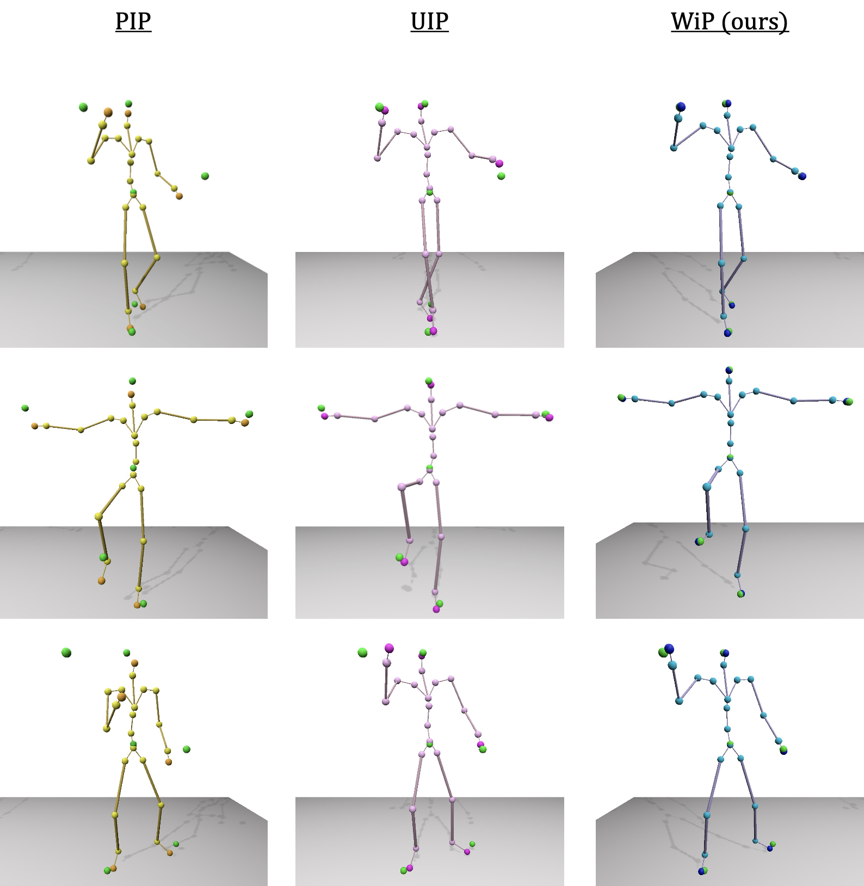
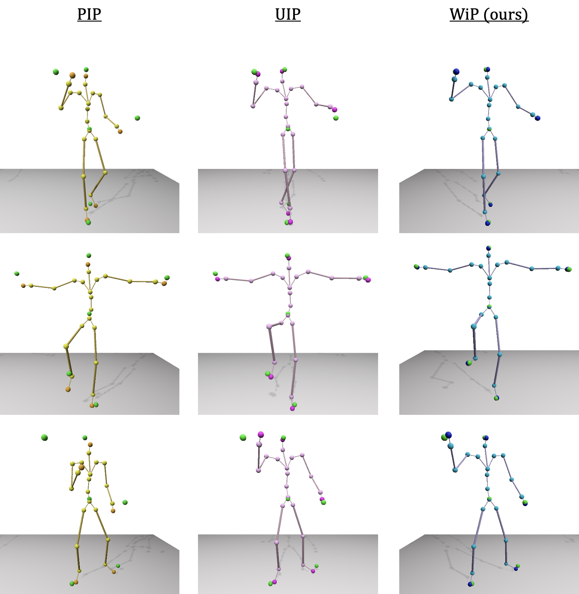

Mocap Anywhere:
Towards Pairwise-Distance based Motion Capture in the Wild (for the Wild)

Abstract
We introduce a novel motion capture system that reconstructs full-body 3D motion using only sparse pairwise distance (PWD) measurements from body-mounted(UWB) sensors. Using time-of-flight ranging between wireless nodes, our method eliminates the need for external cameras, enabling robust operation in uncontrolled and outdoor environments. Unlike traditional optical or inertial systems, our approach is shape-invariant and resilient to environmental constraints such as lighting and magnetic interference.
At the core of our system is Wild-Poser (WiP for short), a compact, real-time Transformer-based architecture that directly predicts 3D joint positions from noisy or corrupted PWD measurements, which can later be used for joint rotation reconstruction via learned methods. WiP generalizes across subjects of varying morphologies, including non-human species, without requiring individual body measurements or shape fitting. Operating in real time, WiP achieves low joint position error and demonstrates accurate 3D motion reconstruction for both human and animal subjects in-the-wild. Our empirical analysis highlights its potential for scalable, low-cost, and general purpose motion capture in real-world settings.
 
